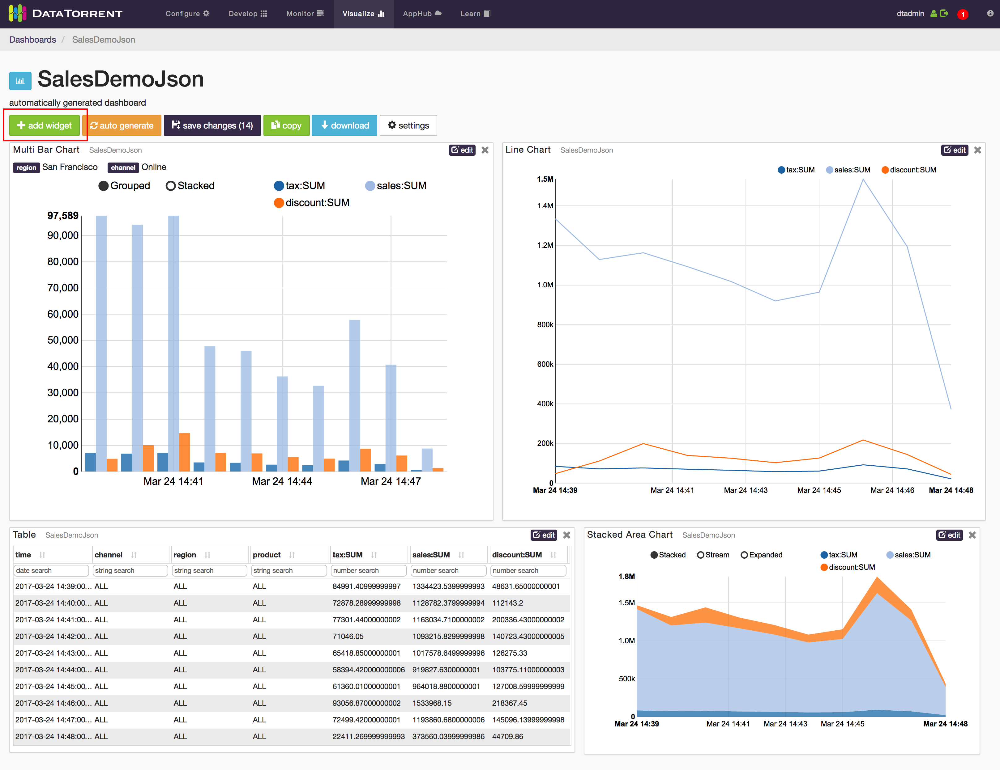

Visualizing data from the Sales Dimension application using dtDashboard
DataTorrent includes powerful data visualization tools, which allow you to visualize streaming data from multiple sources in real time. For additional details see the tutorial entitled dtDashboard - Application Data Visualization at https://docs.datatorrent.com.
After the application is started, a visualize button, available in the Application Overview section, can be used to quickly generate a new dashboard for the Sales Dimensions application.
Generate dashboards
If you created dashboards already, the dashboards appear in the dropdown list. You can select one, or generate a new dashboard by selecting the generate new dashboard option from the dropdown list.
After the dashboard is created, you can add additional widgets for displaying dimensions and combinations of the sales data. Here is an example:

Adding widgets
To derive more value out of application dashboards, you can add
widgets to the dashboards. Widgets are charts in addition to the default
charts that you can see on the dashboard. DataTorrent RTS supports five
widgets: bar chart, pie chart, horizontal bar chart, table, and
note.
To add a widget
- Click the add widget button below the name of the dashboard, for example, Sales Dimension. 
- In the Data Source list, click a data source for your widget.
- Select a widget type under Available Widgets.

- Click add widget button.
The widget is added to your dashboard.
Edit a widget
After you add a widget to your dashboard, you can update it at any time. Each widget has a title that appears in gray. If you hover over the title, the pointer changes to a hand.
To edit a widget
-
Change the size and position of the widget: a. To change the size of the widget, click the border of the widget, and resize it. b. To move the widget around, click the widget, and drag it to the desired location.
-
Edit the widget: a. In the top-right corner of the widget, click edit. b. Type a new title in the Title box. c. Use the remaining options to configure the widget. d. Click OK.
-
To remove a widget, in the top-right corner, click the delete button.